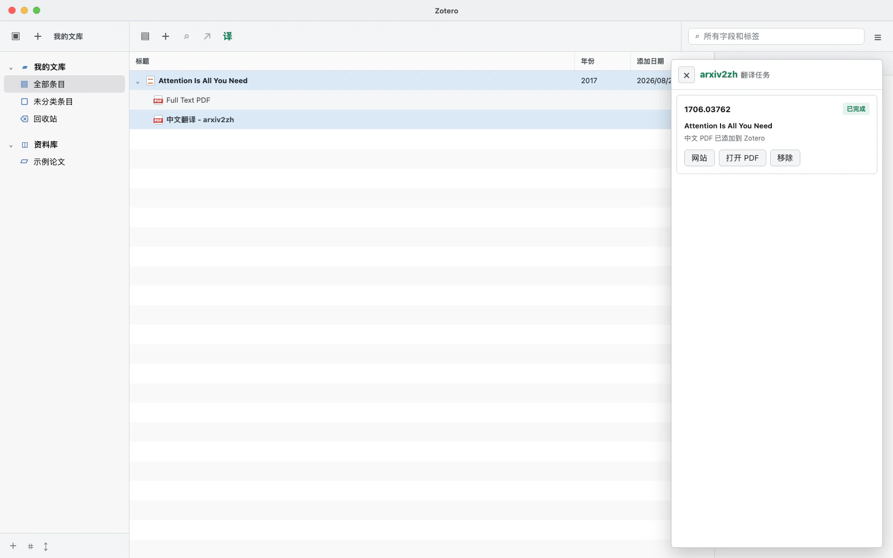
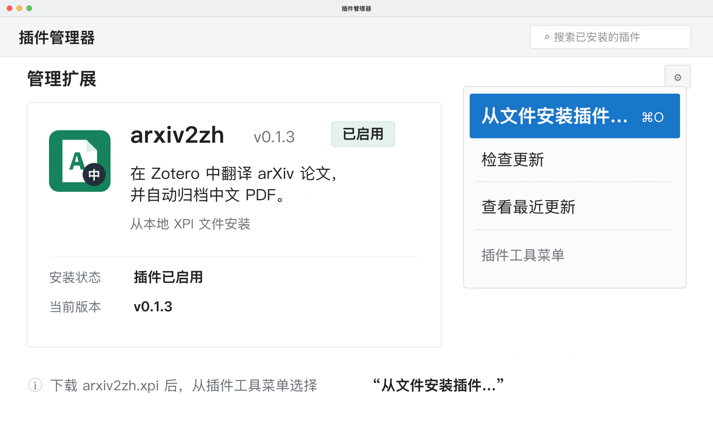
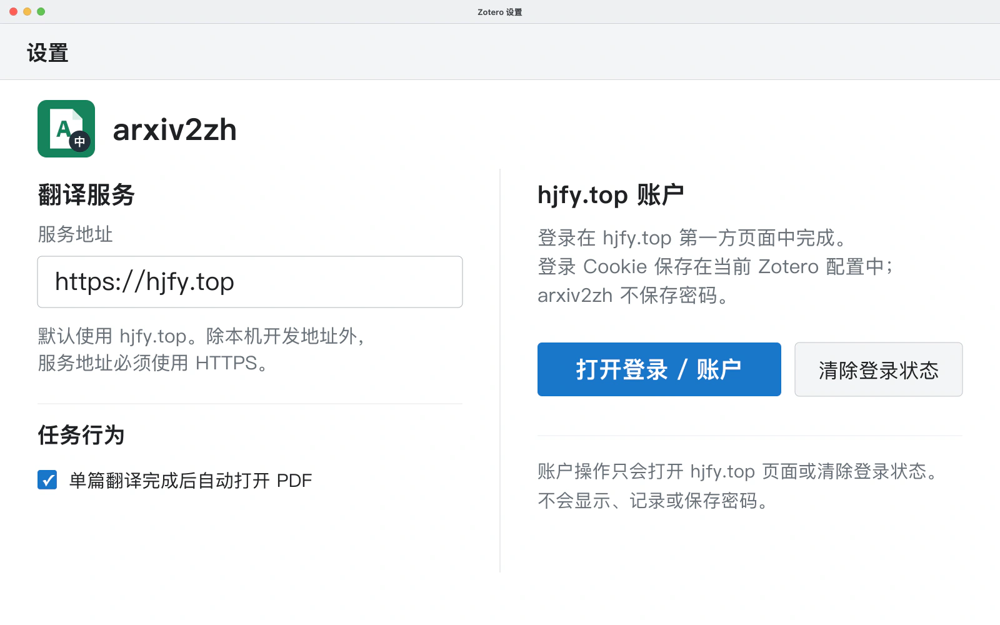
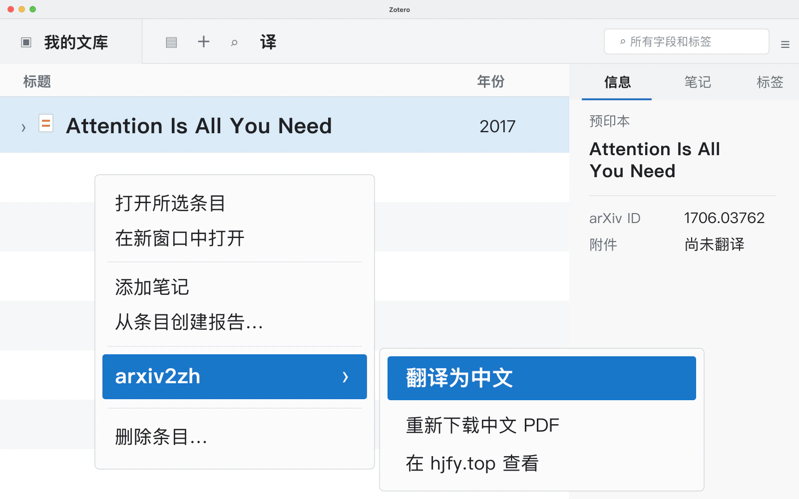

01
安装插件
从 GitHub Release 下载 arxiv2zh.xpi，在 Zotero 的“工具
→ 插件”中选择“从文件安装插件”，随后重启 Zotero。

02
登录一次
从 arxiv2zh 设置或任务面板打开 hjfy.top 并完成登录。Cookie 保存在当前 Zotero 配置中，无需每次重复登录。

03
翻译为中文
选中包含 arXiv 信息的条目或 PDF 附件，右键选择“arxiv2zh → 翻译为中文”。

完成
中文 PDF 自动回到 Zotero
翻译服务使用 arXiv 的 TeX 源码翻译并重新编译，尽可能保留公式、图表、引用与论文结构。完成后，中文 PDF 自动成为原条目的子附件。